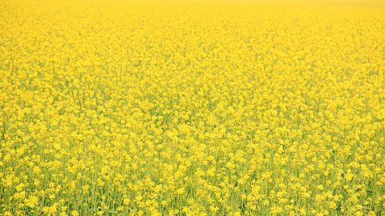

Vasant Panchmi:
Vasant Panchami, also spelled Basant Panchami, is a festival that marks the arrival of spring, celebrated by people in various ways depending on the region. The people of the Punjab wear yellow clothes and eat yellow rice to emulate the yellow mustard (sarson) flower fields, or play by flying kites.